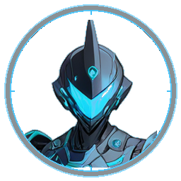
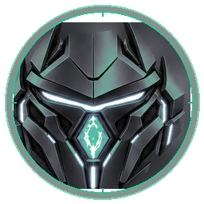
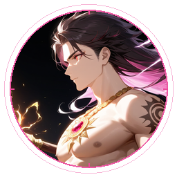

A battle-tested catalog powering Creative Direction, Deep Systems Architecture, Reverse Engineering, and Enterprise Quality Verification. Includes Emil Kowalski craft motion modules and verified protocols.


